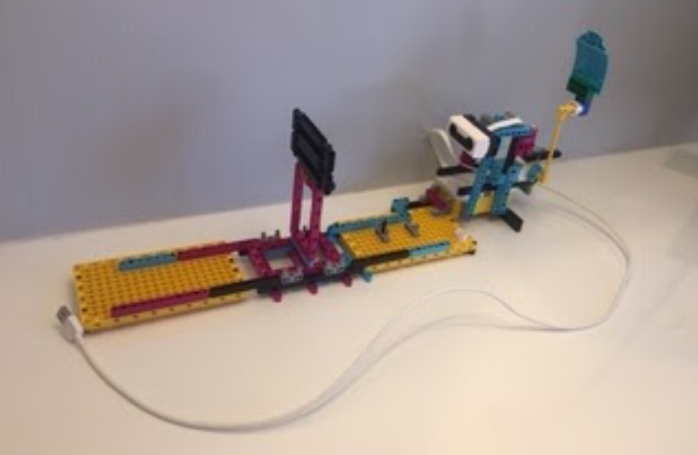
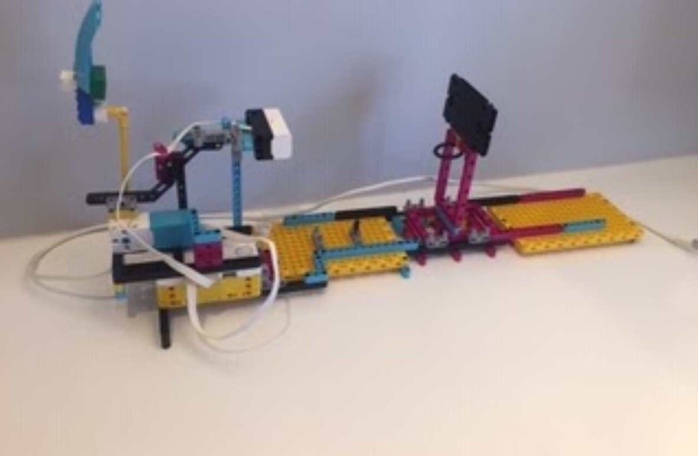
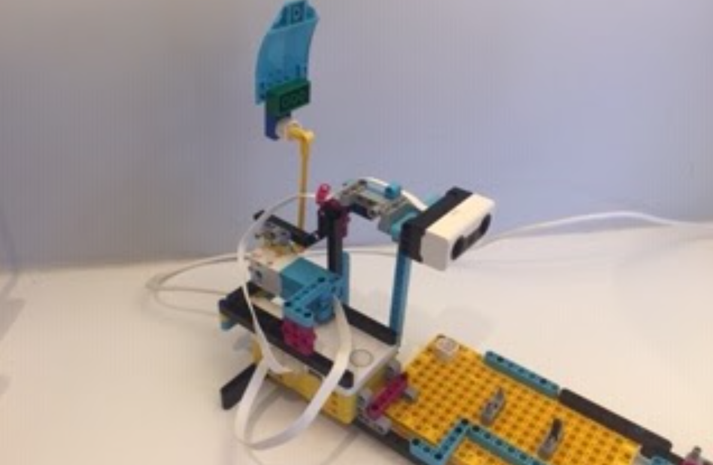
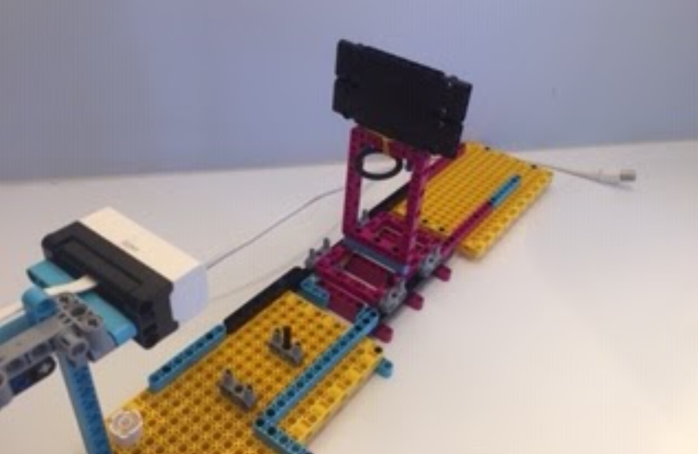

Basketball Shooter




When I worked at Tufts CEEO in the summer of 2020, I was placed on the AI team with the goal of creating projects using the LEGO SPIKE Prime which incorporated AI algorithms. One of these projects was the intelligent basketball shooting device pictured above.
The AI program uses the linear regression algorithm to calculate the angle at which to launch the ball. Users record data points comparing the distance from the hoop (the independent variable) against the shooting angle needed to score (the dependent variable), which the algorithm then uses to predict the optimal launch angle for any given distance.
To see the Basketball Shooter in action please check out the video below: